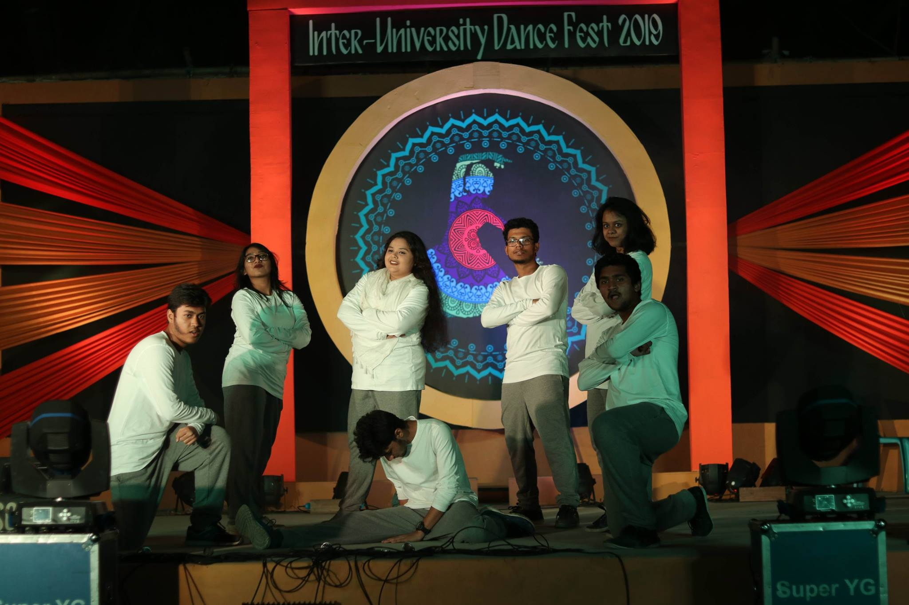
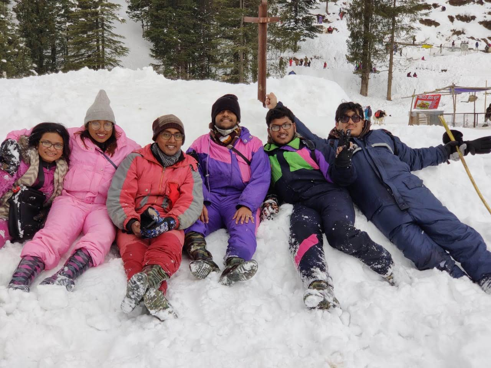

Ishrat Jahan Eliza
- Data Visualization
- Empirical AI & LLMs in Visualization
- Human-Centered Computing
I am a PhD student in Computer Science at the Kahlert School of Computing and SCI Institute, University of Utah, advised by Dr. Valerio Pascucci. My research sits at the intersection of data visualization, empirical AI/LLMs, and human-centered computing — recently I've been building LLM-assisted pipelines for exploring and animating petascale scientific data, and designing accessible text descriptions for complex visualizations for blind and low-vision readers, in collaboration with the Visualization Design Lab and Prof. Alexander Lex.
I completed my MSc in Computer Science at the University of Utah in December 2025 (CGPA 3.98/4.00), and graduated with a BSc in Computer Science and Engineering from Bangladesh University of Engineering and Technology in 2022. Before starting my PhD, I worked as a Software Developer on the data science team at IQVIA. My work has appeared at EuroVIS, IEEE VIS's AccessViz workshop, and ACM COMPASS, and in journals including Scientific Reports and Heliyon; I also serve as a reviewer for IEEE VIS and EuroVIS. My full publication list is available on Google Scholar.
Education
Kahlert School of Computing & SCI Institute, University of Utah
Advisor: Dr. Valerio Pascucci
Course highlights: HCI, Visualization for Data Science, AI, Graduate Algorithms, Machine Learning
University of Utah
CGPA: 3.98/4.00
Bangladesh University of Engineering and Technology
CGPA: 3.51/4.00 · Final two-year CGPA: 3.816
Thesis: eDakterBari — A Human-Centered Solution Enabling Online Medical Consultation for Resource-Constrained Communities in Bangladesh. Advisor: Dr. A. B. M. Alim Al Islam
Savar Cantonment Public School and College
GPA: 5.00/5.00
Savar Cantonment Board Girls' High School
GPA: 5.00/5.00
Publications
Animating Petascale Time-varying Data on Commodity Hardware with LLM-assisted Scripting
The 11th International Conference on Big Data Analytics (ICBDA) · DOI: 10.48550/arXiv.2603.07053
My contribution: I designed an agentic pipeline with an LLM that understands natural-language user queries and returns the parameters needed to generate a time-series animation from real-world, large-scale data. Supervised by Dr. Valerio Pascucci.
Accessible Text Descriptions for UpSet Plots
†The first three authors contributed equally · Computer Graphics Forum · DOI: 10.48550/arXiv.2503.17517
My contribution: I conducted and designed a qualitative analysis of UpSet plots from academic publications to build a template for human-readable text descriptions, in collaboration with our blind co-author, and implemented the description generator in Python (published on PyPI). Supervised by Prof. Alexander Lex.
A Bimodal Longitudinal Investigation on Changes in Sentiments over Social Media Interactions Owing to COVID-19 Pandemic
Volume 15, Issue 1, Nature Publishing Group UK · DOI: 10.1038/s41598-025-44070-0
eDakterBari: A Human-Centered Solution Enabling Online Medical Consultation and Information Dissemination for Resource-Constrained Communities in Bangladesh
Volume 10, Issue 1, Elsevier · DOI: 10.1016/j.heliyon.2023.e23100
eDakterBari is a platform providing health services to orphans in Bangladesh, a community with limited resources. I developed a mobile application in Flutter and Dart to support healthcare consultation for orphans via intermediation, and conducted semi-structured surveys analyzed using content analysis.
Revealing Influences of Socioeconomic Factors over Disease Outbreaks
ACM SIGCAS/SIGCHI Conference on Computing and Sustainable Societies · DOI: 10.1145/3530190.3534804
We accumulated data on 72 infectious diseases and their outbreaks worldwide over 23 years, together with corresponding socioeconomic indicators, and analyzed the correlations between 126 outbreak attributes and 192 socioeconomic factors — a novel contribution to disease outbreak analysis and prediction.
CORONOSIS: Corona Prognosis via a Global Lens to Enable Efficient Policy-making Both at Global and Local Levels
ACM SIGCAS/SIGCHI Conference on Computing and Sustainable Societies · DOI: 10.1145/3530190.3534831
My contribution: I conducted statistical analysis in Python to identify relationships between environmental, socioeconomic, and COVID-19 variables, performed prediction analysis using the SIRD epidemiological model with the data analysis team, and deployed the resulting dashboard on AWS.
Research Projects
Agents for Scientific Dataset Exploration
Designing a framework that uses a large language model to explore scientific datasets through natural language, generating visualizations and textual insights.
Evaluating Visualization Modalities for Tumor Margin Localization
Conducting a comparative user study evaluating different display modalities on surgeons' ability to localize tumor margins in 3D tissue models, to inform surgical visualization tool design.
User Interaction Analytics Framework
Developing a user analytics framework that captures and replays user interactions on whole slide images, with a dashboard for behavioral analysis to support training inference models.
User Study to Evaluate Text Descriptions for UpSet Plots
Ran a within-subject survey and semi-structured interviews via ReVISit on Prolific, targeting researchers across the USA, UK, and Canada. Analyzed quantitative and qualitative data using SciPy, Vega-Altair, and thematic analysis.
Academic Service
Reviewer, IEEE Visualization and Visual Analytics Conference (IEEE VIS)
Reviewer, 29th Eurographics Conference on Visualization (EuroVIS)
Work Experience
Software Developer
Worked with the Data Science team to develop and investigate potential algorithms for reporting the market potential of medical products for organizations worldwide, as part of the Python team. Tested existing production algorithms by implementing unit test cases in Python.
Data Analyst Intern
Analyzed user, session, game level, and other activity data related to games using MySQL and Tableau.
Skills
- Python
- JavaScript
- C / C++
- Java
- Dart
- HTML / CSS
- R
- Pandas
- NumPy
- React
- Node.js
- Next.js
- Flutter
- Keras
- MongoDB
- MySQL
- Scikit-learn
- Seaborn
- Vega-Altair
- Matplotlib
- D3.js
- SciPy
- Git
- LaTeX
- VS Code
- Figma
- Postman
- Adobe Premiere Pro
- Excel
Leadership & Extra-curricular
Lead Student Volunteer
Student Volunteer
Cultural Secretary
President
Class Representative
Beyond Research
Dancing has been a passion of mine since performing at the Inter University Dance Fest at BUET in 2018 — I served as President of the BUET Dance Club in my final undergrad year, and some performances are on YouTube. I'm also an enthusiastic traveler and, since moving to Utah, a hiker — the 16.7-mile Grand Canyon rim-to-rim and the 14.2-mile Mt. Timpanogos summit are two favorites so far.


